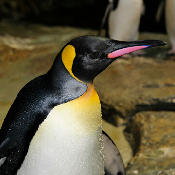

King penguins
What are King Penguins?
King Penguins are a type of penguin that live in the sub-Antarctic regions of the world, including the Falkland Islands, South Georgia, and other nearby islands. They are the second largest species of penguin, after the Emperor Penguin.
Characteristics of King Penguins
- Size: Adult King Penguins can reach heights of up to 1 meter (3.3 feet) and weigh between 11-16 kg (24-35 lbs).
- Appearance: King Penguins have distinctive black and white feathers, with bright orange patches on their necks. They also have long, slender beaks and webbed feet.
- Diet: King Penguins eat mainly small fish, squid, and krill. They are skilled divers and can swim up to depths of 300 meters (1,000 feet) to catch their prey.
- Behavior: King Penguins are social animals and live in large colonies, with some colonies containing over 100,000 penguins. They also have unique courtship behaviors, including the exchange of stones between mating pairs.
Conservation Status
King Penguins are currently listed as a species of least concern, meaning that they are not currently at risk of extinction. However, their populations are still threatened by climate change and overfishing, so conservation efforts are ongoing to protect these animals and their habitats.